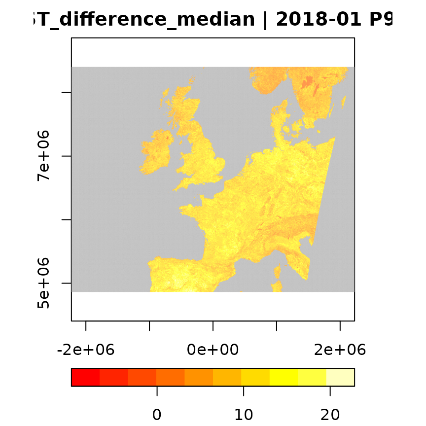
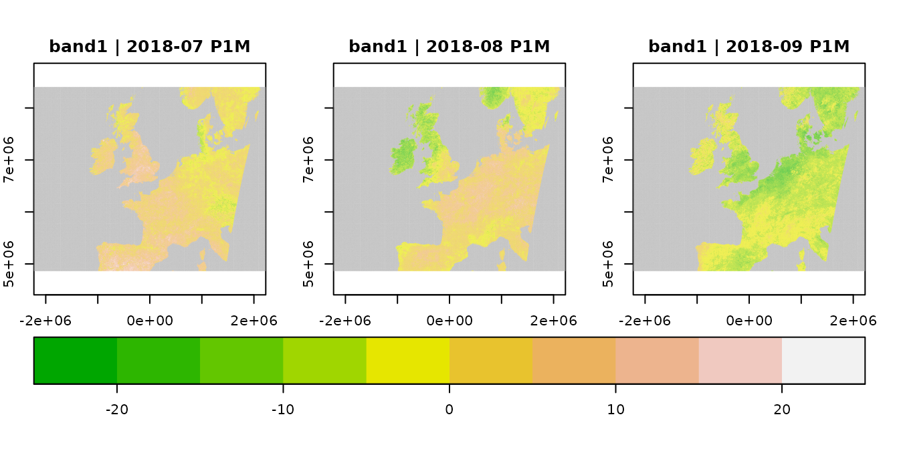

1. Creating data cubes from local MODIS imagery
Marius Appel
Source:vignettes/gc01_MODIS.Rmd
gc01_MODIS.RmdThe gdalcubes package aims at making the work with large collections of Earth observation (EO) imagery (e.g. from Sentinel 2) easier and faster. Typical challenges with these data such as overlapping images, different spatial resolutions of spectral bands, irregular temporal sampling, and different coordinate reference systems are abstracted away from users by reading the data as a raster data cube and letting users define the shape of the cube (spatiotemporal extent, resolution, and spatial reference system). Working with EO imagery then becomes more interactive: going from “try method X on low resolution and get the result asap” to “apply the final method to the full resolution dataset over night” becomes straightforward.
This brief vignette illustrates basic ideas of the package. We will use satellite imagery from the Moderate Resolution Imaging Spectroradiometer (MODIS) that is small enough to process even on older machines. The imagery comes as a set of HDF4 files. We assume that you have successfully installed the gdalcubes package. Please also make sure that your GDAL installation supports the HDF4 driver (e.g. with gdalcubes_gdalformats()).
In the following, we will follow a simple workflow by
- Collecting image files as an image collection object,
- Creating data cubes at various spatiotemporal resolutions and extents, and
- Applying simple operations on data cubes including band selection, application of pixel-wise functions, reduction over time, and time series filtering.
Example dataset
We will use 8-daily land surface temperature from the MODIS product MOD11A2, covering western Europe (tiles v=13,14, h=03,04) from January to September 2018. The zip archive sums to approximately 600 megabytes. The code below downloads and unzips the data to the current working directory. Since this might sometimes lead to timeouts depending on the the internet connection and availability of the file service, we first increase the global timeout option to at least 30 minutes (though it typically takes only a few minutes or less).
options(timeout = max(1800, getOption("timeout")))
dest_dir = tempdir()
download.file("https://uni-muenster.sciebo.de/s/eP9E6OIkQbXrmsY/download", destfile=file.path(dest_dir, "MOD11A2.zip"),mode = "wb")
unzip(file.path(dest_dir, "MOD11A2.zip"), exdir = file.path(dest_dir,"MOD11A2"))
unlink(file.path(dest_dir, "MOD11A2.zip"))Creating image collections from local image files
As a first step, we must combine the set of files from the MODIS product (MOD11A2) into a single image collection object. The image collection is a simple index, pointing to files and storing the spatial extents, spatial reference systems, acquisition date/time of images and how files relate to image bands. The package comes with a set of predefined rules (called image collection formats), how this information can be extracted from filenames for selected EO products. A list of available collection formats including a short description can be printed with:
library(gdalcubes)
collection_formats()
## CHIRPS_v2_0_daily_p05_tif | Image collection format for CHIRPS v 2.0 daily
## | global precipitation dataset (0.05 degrees
## | resolution) from GeoTIFFs, expects list of .tif
## | or .tif.gz files as input. [TAGS: CHIRPS,
## | precipitation]
## CHIRPS_v2_0_monthly_p05_tif | Image collection format for CHIRPS v 2.0 monthly
## | global precipitation dataset (0.05 degrees
## | resolution) from GeoTIFFs, expects list of .tif
## | or .tif.gz files as input. [TAGS: CHIRPS,
## | precipitation]
## ESA_CCI_SM_ACTIVE | Collection format for ESA CCI soil moisture
## | active product (version 4.7) [TAGS: Soil
## | Moisture, ESA, CCI]
## ESA_CCI_SM_PASSIVE | Collection format for ESA CCI soil moisture
## | passive product (version 4.7) [TAGS: Soil
## | Moisture, ESA, CCI]
## GPM_IMERG_3B_DAY_GIS_V06A | Collection format for daily
## | IMERG_3B_DAY_GIS_V06A data [TAGS: Precipitation,
## | GPM, IMERG]
## L8_L1TP | Collection format for Landsat 8 Level 1 TP
## | product [TAGS: Landsat, USGS, Level 1, NASA]
## L8_SR | Collection format for Landsat 8 surface
## | reflectance product [TAGS: Landsat, USGS, Level
## | 2, NASA, surface reflectance]
## MCD64A1 | Collection format for the MODIS MCD64A1 product
## | (burned area by day) [TAGS: MODIS, Fire]
## MxD09GA | Collection format for selected bands from the
## | MODIS MxD09GA (Aqua and Terra) product [TAGS:
## | MODIS, surface reflectance]
## MxD10A2 | Collection format for selected bands from the
## | MODIS MxD10A2 (Aqua and Terra) v006 Snow Cover
## | product [TAGS: MODIS, Snow Cover]
## MxD11A1 | Collection format for selected bands from the
## | MODIS MxD11A2 (Aqua and Terra) v006 Land Surface
## | Temperature product [TAGS: MODIS, LST]
## MxD11A2 | Collection format for selected bands from the
## | MODIS MxD11A2 (Aqua and Terra) v006 Land Surface
## | Temperature product [TAGS: MODIS, LST]
## MxD13A2 | Collection format for selected bands from the
## | MODIS MxD13A2 (Aqua and Terra) product [TAGS:
## | MODIS, VI, NDVI, EVI]
## MxD13A3 | Collection format for selected bands from the
## | MODIS MxD13A3 (Aqua and Terra) product [TAGS:
## | MODIS, VI, NDVI, EVI]
## MxD13Q1 | Collection format for selected bands from the
## | MODIS MxD13Q1 (Aqua and Terra) product [TAGS:
## | MODIS, VI, NDVI, EVI]
## MxD14A2 | Collection format for the MODIS MxD14A2 (Aqua
## | and Terra) product [TAGS: MODIS, Fire]
## PlanetScope_3B_AnalyticMS_SR | Image collection format for PlanetScope 4-band
## | scenes [TAGS: PlanetScope, BOA, Surface
## | Reflectance]
## Sentinel1_IW_GRD | Image collection format for Sentinel 1 Level 1
## | GRD data as downloaded from the Copernicus Open
## | Access Hub, expects a list of file paths as
## | input. The format works on original ZIP
## | compressed as well as uncompressed imagery.
## | [TAGS: Sentinel, Copernicus, ESA, SAR]
## Sentinel2_L1C | Image collection format for Sentinel 2 Level 1C
## | data as downloaded from the Copernicus Open
## | Access Hub, expects a list of file paths as
## | input. The format works on original ZIP
## | compressed as well as uncompressed imagery.
## | [TAGS: Sentinel, Copernicus, ESA, TOA]
## Sentinel2_L1C_AWS | Image collection format for Sentinel 2 Level 1C
## | data in AWS [TAGS: Sentinel, Copernicus, ESA,
## | TOA]
## Sentinel2_L2A | Image collection format for Sentinel 2 Level 2A
## | data as downloaded from the Copernicus Open
## | Access Hub, expects a list of file paths as
## | input. The format should work on original ZIP
## | compressed as well as uncompressed imagery.
## | [TAGS: Sentinel, Copernicus, ESA, BOA, Surface
## | Reflectance]
## Sentinel2_L2A_THEIA | Image collection format for Sentinel 2 Level 2A
## | data as downloaded from Theia. [TAGS: Sentinel,
## | ESA, Flat Reflectance, Theia]In this case, MxD11A2 is the correct format for our datasets. Internally, collection formats are defined in relatively simple JSON files, presets for other products will be added continuously.
To create the image collection, we must pass a list of our files and the collection format to the create_image_collection() function. The code below finds all files as character vector of GDAL datasets, which then can be passed as the first argument to the create_image_collection() function. The second argument here refers to the image collection format and the third argument provides the name of the output image collection file (which is simply an SQLite database). The collection format also knows that bands are stored as subdatasets in the HDF files.
files = list.files(file.path(dest_dir,"MOD11A2"), pattern=".hdf$", full.names = TRUE)
MODIS.collection = create_image_collection(files, "MxD11A2")Image collections can be saved by setting the out_file argument in create_image_collection() and loaded with the image_collection() function. For large collections, the creation hence is typically done only once.
Creating a data cube
The created image collection only stores references to original image files and knows about their datetime, spatial extent, and coordinate reference system. Image collections do not store copies of image data and thus typically only comsume a few kilobytes per image. To work with image data as a four-dimensional array (data cube) the raster_cube() function creates a data cube from an image collection. This function expects at least two arguments:
- an image collection object as created above and
- a data cube view object defining the spatiotemporal resolution, extent, and the spatial reference system of the target cube
Further optional arguments include the internal size of chunks for performance optimizations and image masks to drop invalid pixels (e.g. cloud pixels).
To create a data cube view, we can use the cube_view() function and define out target data cube geometry. Below, we create a data cube with the full spatiotemporal extent of the collection, using the WGS 84 / Pseudo-Mercator projection, and a pixels size of 5km x 5km x one month.
v = cube_view(extent=MODIS.collection, srs = "EPSG:3857", dx = 5000, dy = 5000, dt = "P1M")
MODIS.cube = raster_cube(MODIS.collection, v)
MODIS.cube
## A GDAL data cube proxy object
##
## Dimensions:
## low high count pixel_size chunk_size
## t 2018-01 2018-09 9 P1M 1
## y 4865340.08466077 8400340.08466077 707 5000 576
## x -2227500 2227500 891 5000 576
##
## Bands:
## name offset scale nodata unit
## 1 DAY_VIEW_TIME 0.00 0.100 NaN hrs
## 2 EMIS_31 0.49 0.002 NaN
## 3 EMIS_32 0.49 0.002 NaN
## 4 LST_DAY 0.00 0.020 NaN K
## 5 LST_NIGHT 0.00 0.020 NaN K
## 6 NIGHT_VIEW_TIME 0.00 0.100 NaN hrs
## 7 QC_DAY 0.00 1.000 NaN
## 8 QC_NIGHT 0.00 1.000 NaN
names(MODIS.cube)
## [1] "DAY_VIEW_TIME" "EMIS_31" "EMIS_32" "LST_DAY"
## [5] "LST_NIGHT" "NIGHT_VIEW_TIME" "QC_DAY" "QC_NIGHT"
dim(MODIS.cube)
## [1] 9 707 891Notice that raster_cube() will not run any computations besides deriving the shape of the output cube. Instead, it will return a proxy object that will not be evaluated until data must be actually read (e.g. when calling plot(x)). This not only applies to data cubes from image collections but also for derived cubes (see further below).
The diagnostic messages simply tell us that the extent of the cube was slightly widened, because the provided pixel size would otherwise lead to simething like “partial” pixels. The reason is that the size of a dimension, (e.g., \(right - left\)) is not divisible by the pixel size.
Aggregation and resampling
Besides the spatiotemporal extent, the resolution and the spatial reference system, the data cube view contains the two important parameters aggregation and resampling. Resampling here refers to how images are resampled in space during the reprojection, scaling, and cropping operations. The temporal aggregation method defines how values for the same cell from different images are combined in the target cube. For example, a data cube with monthly temporal resolution will contain values from multiple images. Currently, possible values are first, last, min, max, mean, and median. These functions are evaluated per data cube pixel.
Data cube operations
The package comes with a few operations on data cubes to (i) select bands (select_bands()), (ii) apply pixel-wise arithmetic expressions (apply_pixel()), (iii) reduce data cubes over space and time (reduce_time(), reduce_space()), apply a moving-window function over time (window_time()), (iv) join bands of identically shaped data cubes (join_bands()), and some more. All of these functions produce a proxy data cube, storing the shape of the result cube but not any data. They all take a (proxy) data cube as first argument and can be chained. The following code demonstrates some of the operations and how data cubes can be plotted.
MOD11A2.bandselect = select_bands(MODIS.cube, c("LST_DAY","LST_NIGHT"))
MOD11A2.daynight_difference =
apply_pixel(MOD11A2.bandselect, "0.02*(LST_DAY-LST_NIGHT)",names = "LST_difference")
MOD11A2.reduce = reduce_time(MOD11A2.daynight_difference, "median(LST_difference)")
plot(MOD11A2.reduce, col=heat.colors, key.pos=1)
The result is the median day night surface temperature difference for all pixels between Jan and December 2018. Notice that no data is actually read until we call plot(), i.e. all operations again return proxy objects.
Operations on data cubes are designed such that they can be used with the native pipe operator |> (or %>% from the magrittr package). The following code for example derives monthly differences of land surface temperature, from June to September 2018. The window_time function here applies the simple time series kernel difference filter \(T_t - T_{t-1}\).
library(magrittr) # get the pipe
# update v by changing temporal extent only
v1 = cube_view(view=v, extent=list(t0="2018-06", t1="2018-09"))
raster_cube(MODIS.collection, v1) %>%
select_bands(c("LST_DAY")) %>%
apply_pixel("LST_DAY * 0.02") %>% # apply scale
window_time(kernel=c(-1,1), window=c(1,0)) %>%
plot(col=terrain.colors, key.pos=1, zlim=c(-25,25), t = 2:4, ncol = 3)
Export data cubes to files
Replacing the call to plot() with write_ncdf(), or write_tif() would write the result as NetCDF or GeoTIFF files to disk. While write_ncdf() always produces a single file, write_tif() produces one file per time slice and the time is automatically added to the provided output filename. Both functions support compression and modifying the data type to save disk space.
Parallel processing
gdalcubes supports parallel processing of data cube operations. Calling gdalcubes_options(parallel = n) will tell all following data cube operations to use up to n parallel processes. Notice that worker processes are assigned to chunks of the data cube and the true number of processes can be lower if there are less than n chunks.
Further reading
This vignette presents a very simple example with a small local dataset. Further tutorials and publications not available as a vignette inside the package but available online include:
-
A detailed tutorial presented at OpenGeoHub Summer School 2019 where larger Landsat and Sentinel-2 datasets with overlapping images from different spatial reference systems are used and user-defined R functions are applied on data cubes.
-
A blog post on r-spatial.org explains, how
gdalcubescan be used to analyze large satellite collections in the cloud using STAC.